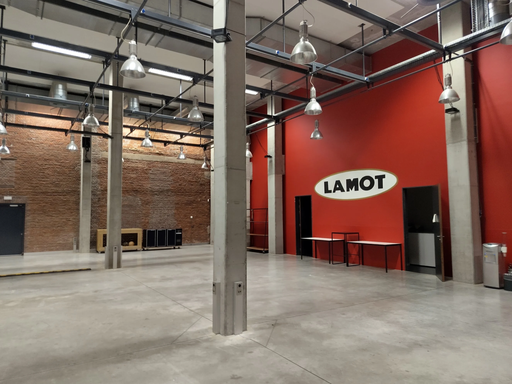
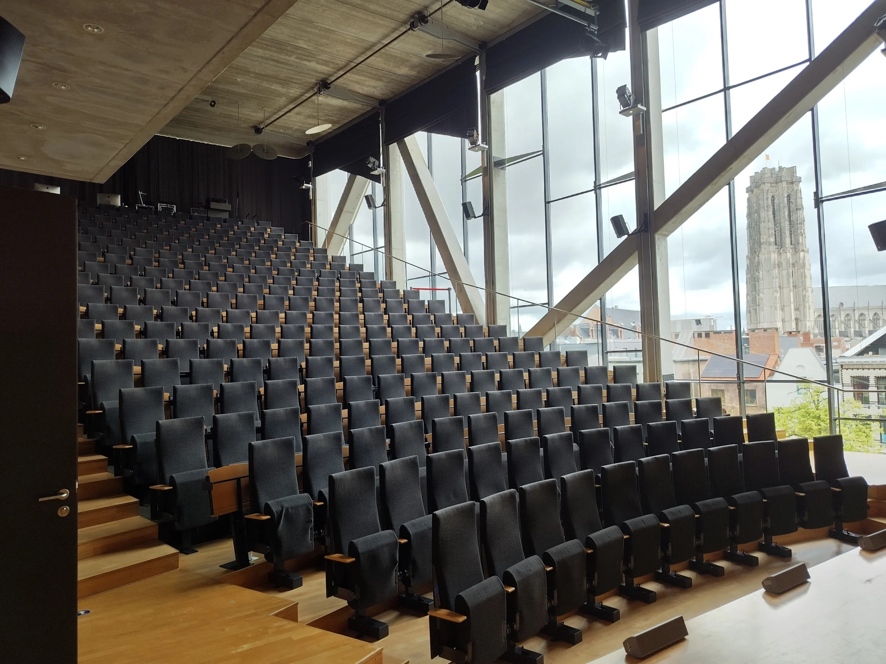
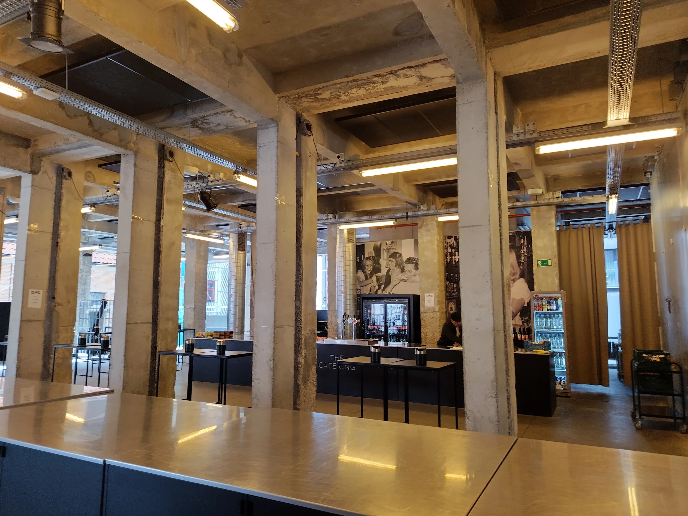

The Venue
The Lamot Congress and Heritage center will be our home during the conference. With a blend of modern and old industrial, this converted old brewery offers a beautiful auditorium for the main track, as well as eight other spaces, which we'll use for breaks, workshops, our signature Community Hall (aka "the reified hallway track"), and our brand new lightning talk open mic, the Renegade Stage!




